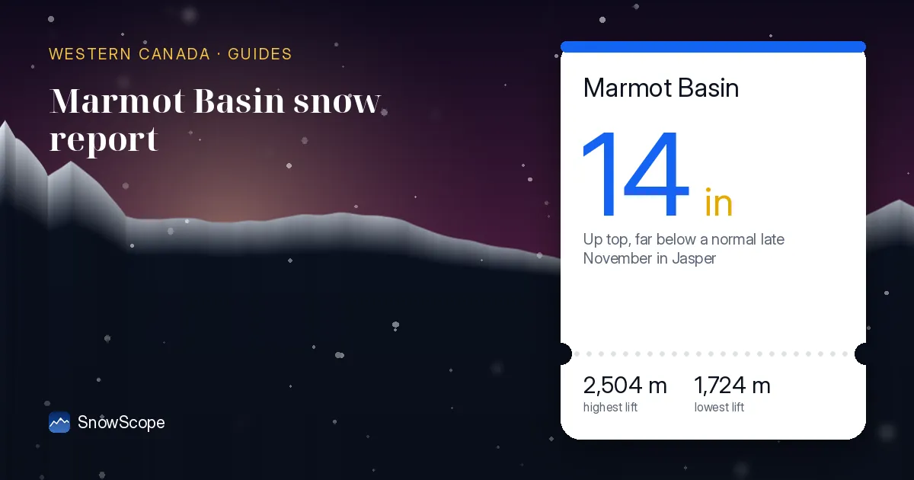
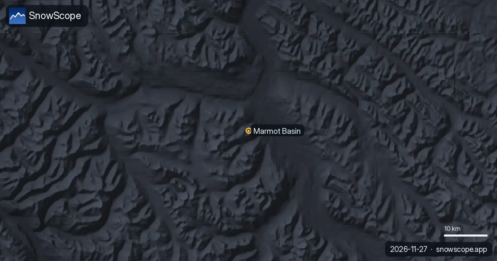

Marmot Basin snow report: 14 in (35 cm) up top, far below a normal late November in Jasper
Marmot Basin has 14 in (35 cm) of snow on its upper slopes on Friday, November 27, with 2 in (6 cm) in the last three days and only about 2 in (5 cm) more forecast by Monday. For Jasper that is a slow start: at 6,936 ft (2,114 m) the pack is 5 in (13 cm), where 42 in (106 cm) is normal for the date.
See the live snow forecast for Marmot Basin in the SnowScope appSnow depth, powder alerts and the 3D map, free.

Snow report, Friday November 27
Upper slopes: 14 in (35 cm). New snow: 1 in (2 cm) in 24 hours, 2 in (6 cm) in 72 hours, 2 in (6 cm) in seven days. Forecast: dry Saturday and Sunday, about 2 in (5 cm) on Monday. Over the next seven days the summit, at 8,215 ft (2,504 m), gets about 4 in (9 cm).
Expect groomed runs on the main lifts and thin cover off-piste; rocks show quickly on wind-scoured ridges.
Why it matters here more than elsewhere
Marmot is normally one of the steadiest early-season mountains in the Canadian Rockies. Its history shows a 30 cm (12 in) base from around late October in a usual winter, and a late-November depth near 42 in (106 cm) at 6,936 ft (2,114 m). This season the storms that hit the coast have left the eastern Rockies mostly dry.
The contrast with last winter is sharp: 2025-26 was the deepest of 46 winters on our record, peaking at 9.4 ft (286 cm).
What December usually brings
On December 15 the usual depth at 6,936 ft (2,114 m) is 4.3 ft (131 cm); on Christmas Day it is 4.6 ft (140 cm). In every one of 46 winters the mountain had at least 50 cm (20 in) by New Year. Even the leanest winter, 1992-93, peaked at 4.7 ft (142 cm).
So the history says the base usually arrives; this year it has to arrive faster than usual. The Marmot Basin snow page tracks it every day.
Marmot versus the Banff areas
Marmot is not alone. The whole eastern side of the Rockies is behind schedule this year, while the Coast Mountains are buried: Whistler's upper slopes passed 8 ft this week. The storms that came off the Pacific dropped most of their snow on the coast and inland ranges before reaching Jasper.
Marmot's high base, at 5,656 ft (1,724 m), keeps what does fall in good shape: cold, dry snow that does not melt between storms. That is why the mountain usually holds on well through dry spells and why one or two December storms can change the picture quickly.
The usual depth on December 8 is 4.1 ft (124 cm) at 6,936 ft (2,114 m). If December follows its normal path, a good part of the deficit could be gone before the middle of the month.
Jasper in December
Even on a thin base, early December in Jasper has its own appeal: short lift lines, cold dry snow on the groomers and a quiet town. If you are coming from Edmonton the drive along Highway 16 is straightforward in good weather; watch for wildlife at dusk.
Accommodation in Jasper town is much cheaper in early December than over the holidays, and the mountain is about half an hour from town. Combine a ski day with the other things Jasper does well in winter: the canyon ice walks, the hot springs and the dark-sky evenings. If the forecast turns snowy in the second week of December, that is the week to book: Marmot's cold, dry snow rewards the first visitors after a storm.
Tips for skiers
- Stay on groomed runs until the base passes about 2 ft; early-season rocks are the main hazard.
- Flexible? A trip in the second half of December usually finds much more snow.
- Pack for cold: Jasper's December mornings are often well below freezing.
- Compare other Rockies areas on the Western Canada snow hub.
About these numbers
Snow numbers: SnowScope's snow map and forecast for today, and our record of 46 past winters at each resort (an estimate for the area, not the resort's own report).
Official avalanche bulletins: Parks Canada
Cite this report
For research, teaching or the press: the numbers and charts are free to reuse under CC BY 4.0 with this citation.
SnowScope (2026), Marmot Basin snow report: 14 in (35 cm) up top, far below a normal late November in Jasper, https://snowscope.app/blog/en/2026/11/marmot-basin-snow-report-late-november-2026-jasper-waiting-for-snow.html, accessed 2026-11-27
SnowScope (Atlas Labs). (2026, November 27). Marmot Basin snow report: 14 in (35 cm) up top, far below a normal late November in Jasper. SnowScope snow reports. https://snowscope.app/blog/en/2026/11/marmot-basin-snow-report-late-november-2026-jasper-waiting-for-snow.html
BibTeX
@misc{snowscope2026marmotbasinsnowreportlat,
author = {{SnowScope (Atlas Labs)}},
title = {Marmot Basin snow report: 14 in (35 cm) up top, far below a normal late November in Jasper},
year = {2026},
month = nov,
howpublished = {\url{https://snowscope.app/blog/en/2026/11/marmot-basin-snow-report-late-november-2026-jasper-waiting-for-snow.html}},
note = {Published 2026-11-27 17:42 UTC; accessed 2026-11-27}
}· CC BY 4.0 · Methods, data and tools →
Marmot Basin: snow and temperature by height, this winter vs last (tools) →
Follow Marmot Basin
Free: a message when fresh snow is coming, and the forecast every morning.
More snow reports

Manning Park leads western Canada with 120 cm on November 13, 34 cm ahead of Big White.

A single snowy week can flatter a season, so we weigh today's snow against many past winters in Western Canada. Is the snow store filling as usual? …

Whistler Blackcomb's upper slopes hold 8.7 ft (266 cm) after a 4.6 ft (141 cm) three-day storm. What 46 winters say about Christmas, and why the valley is the only question.